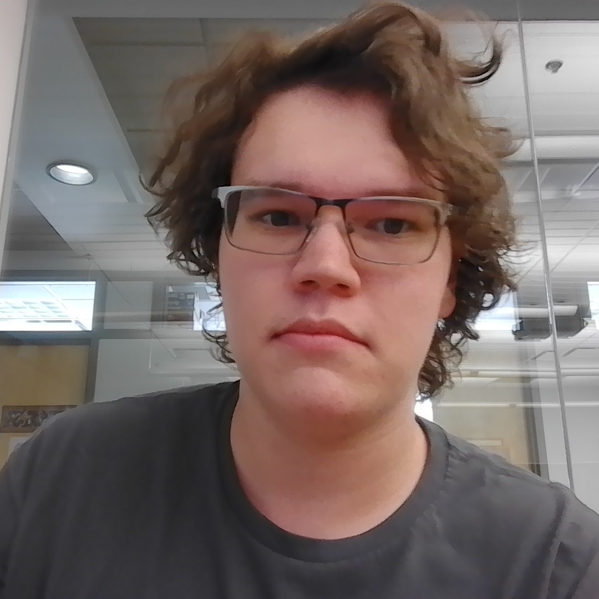

~/resumé
Home
Portfolio
Resumé

Education
Rochester Institute of Techonology
August 2023 - Ongoing First Year Software Engineering Major SWEN B.S Estimated 2027 SWEN M.S Estimated 2028
Legacy High School
August 2019 - May 2023 9th 19-20 - GPA - 3.33, Normal Class Load 10th 20-21 - GPA - 3.50, 1 AP, 1 Career Technical Education (Computer Science, Processing, Python, Java) 11th 21-22 - GPA - 4.50, 3 AP, Double Enrollment in German 2/3 12th 22-23 - GPA - 4.83, 5 AP